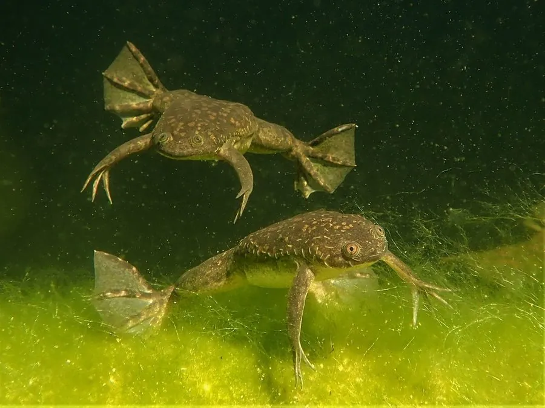

两栖动物 · 动物界
非洲爪蟾 Xenopus laevis

完全水生的非洲蛙类，后足长有角质爪，没有舌头，是发育生物学研究和疫苗检测中的经典实验动物。
- 分类
- 门脊索动物门纲两栖纲目无尾目科负子蟾科属爪蟾属
- 栖息环境
- 非洲南部的池塘、水沟、水库等静水水体
- 地理分布
- 原产非洲南部；作为实验动物和宠物被引入世界各地
- 保护级别
- IUCN 无危（LC）；中国外来物种，无保护级别
物种志
非洲爪蟾体长 10–12 厘米，身体扁平，皮肤光滑，呈灰绿或灰褐色并夹有深色斑纹，眼睛小且位于头顶，没有眼睑，也没有舌头；后足内侧长有三枚黑色的角质爪，“爪蟾”之名由此而来。它终生生活在水中，用肺和皮肤呼吸，常在水面换气，受到惊扰时会用后肢扒动泥沙躲藏。
它原产于非洲南部的静水水域，栖息于池塘、水沟和水库，以水生昆虫、小鱼、蝌蚪和腐肉为食，靠前肢把食物拨入口中。繁殖期雄蟾在水下发出连续的鸣声，雌蟾每次产卵数百至上千枚，2–4 天孵化，蝌蚪约 2 个月变态。它是最早被用于人类妊娠检测的动物之一，也是研究胚胎发育、基因功能和疫苗质控的模式生物；逃逸个体在欧洲、美洲等地形成入侵种群，在中国属于外来物种。
形态与习性
- 食性水生昆虫、小鱼、蝌蚪及腐肉
- 体长10–12 cm
- 体重约 60–200 g
- 寿命约 15–30 年
- 繁殖卵生，每次数百至上千枚，2–4 天孵化
- 活动节律昼夜均活动，多在水底游动
- 特点后足有角质爪、无舌，完全水生
趣味知识
- 非洲爪蟾曾用于人类妊娠检测：注射孕妇尿液后，雌蟾会在数小时内排卵。
- 它的后足长着黑色角质爪，既是“爪蟾”名称的由来，也用于在泥中挖掘。
- 非洲爪蟾没有舌头，靠前肢把食物拨进嘴里，这与多数蛙类不同。